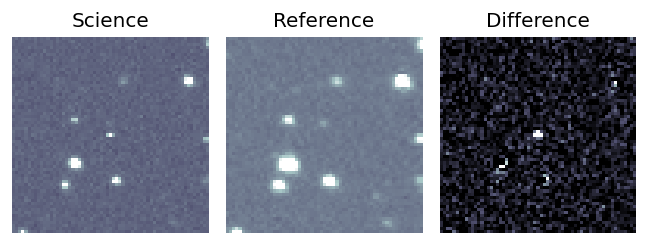
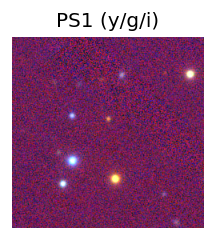
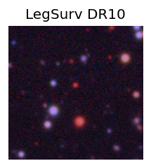
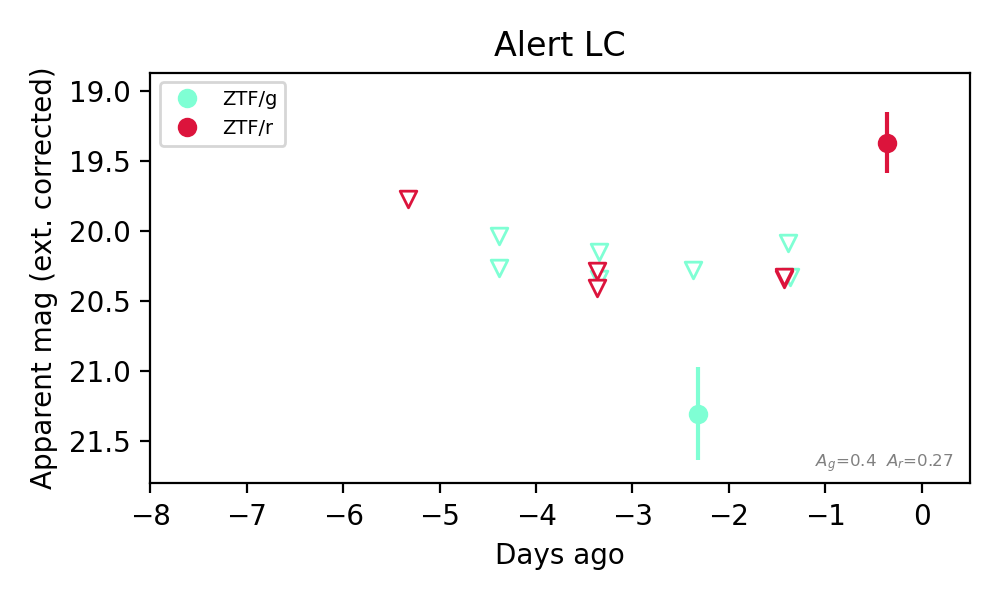
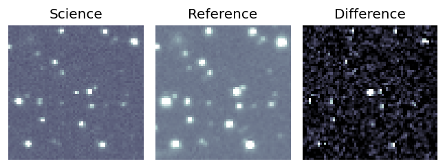
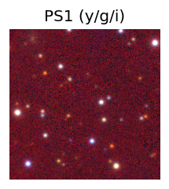
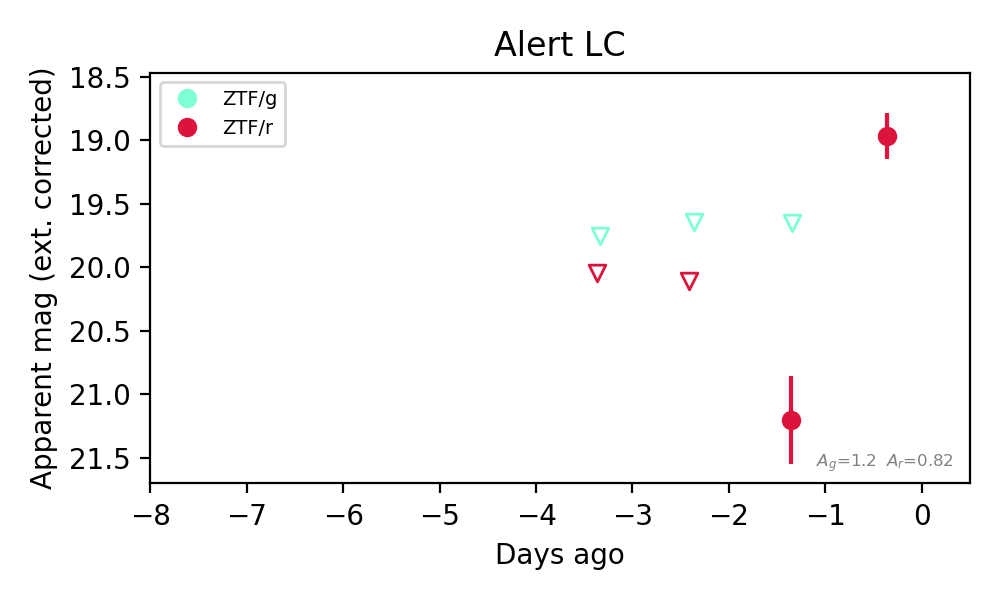

Candidate List 20260913Last night — ZTF: 3,119 passed basic cuts (171 young) · LSST: 0 passed basic cuts (0 young)Previous Day Next Day
Section 1: New Sources (age<1d) Section 2: Old (1-5d) sources observed last nightplaceholder
Section 1: New Afterglow/FBOT Cands Last Night (0)
Section 2: Older Sources Observed Last Night (5)
0. [ZTF] ZTF26abtijze (FBOT?) [Back to Top] [Share] [Trigger Swift] [Fritz Alert] [Fritz Source] [Lasair]RA, Dec: 352.20664, 25.59287 23h28m49.59s, 25d35m34.33sGalactic (l, b): 100.46637, -33.64953 ext(g-r) = 0.07


TESS: Sectors [56 83]
PS1: 0 sources in 3 arcsec
LegacySurvey: 1 sources in 3 arcsec Closest: d = 0.54 arcsec, 124.0 deg (east of north) photoz=0.9 (68% bounds 0.72, 1.07), type=REX peak abs mag (ext. corrected) = -23.92 (68% bounds -23.34, -24.38)

Extinction-corrected gr color:
From alerts: -0.41 +/- 0.24 mag
Rise Rate:
g: 0.42 mag/day
r: 0.33 mag/day
Fade Rate:
1. [ZTF] ZTF26abthpmr (FBOT?) [Back to Top] [Share] [Trigger Swift] [Fritz Alert] [Fritz Source] [Lasair]RA, Dec: 346.10758, 35.40859 23h 4m25.82s, 35d24m30.93sGalactic (l, b): 99.5254, -22.55293 ext(g-r) = 0.082


TESS: Sectors [16 56 83]
PS1: 1 source in 3 arcsec Closest: d = 1.64 arcsec photoz=0.53+/-0.09 peak abs mag = -23.65
LegacySurvey: 0 sources in 3 arcsec

Extinction-corrected gr color:
From alerts: -0.43 +/- 0.11 mag
Rise Rate:
g: 0.88 mag/day
r: 0.57 mag/day
Fade Rate:
2. [ZTF] ZTF26abtqfyy (FBOT?) [Back to Top] [Share] [Trigger Swift] [Fritz Alert] [Fritz Source] [Lasair]RA, Dec: 342.96099, 16.02355 22h51m50.64s, 16d 1m24.77sGalactic (l, b): 85.48641, -38.00262 ext(g-r) = 0.075


TESS: Sectors [56 83]
SDSS (<15 kpc):Found SDSS phot-z: z=0.20; peak abs mag = -20.01
PS1: 0 sources in 3 arcsec
LegacySurvey: 1 sources in 3 arcsec Closest: d = 0.24 arcsec, 226.7 deg (east of north) photoz=0.17 (68% bounds 0.12, 0.27), type=DEV peak abs mag (ext. corrected) = -19.62 (68% bounds -18.83, -20.81)

Extinction-corrected gr color:
From alerts: -0.18 +/- 0.26 mag
Consistent with synchrotron, g-r>0!
Rise Rate:
g: 0.33 mag/day
r: 0.22 mag/day
Fade Rate:
3. [ZTF] ZTF26abtzoxc (FBOT?) [Back to Top] [Share] [Trigger Swift] [Fritz Alert] [Fritz Source] [Lasair]RA, Dec: 318.68115, 15.34714 21h14m43.48s, 15d20m49.72sGalactic (l, b): 65.15807, -22.43407 ext(g-r) = 0.13


TESS: Sectors [55 82]
PS1: 0 sources in 3 arcsec
LegacySurvey: 1 sources in 3 arcsec Closest: d = 3.77 arcsec, 3.4 deg (east of north) photoz=0.15 (68% bounds 0.03, 0.31), type=PSF peak abs mag (ext. corrected) = -19.93 (68% bounds -16.49, -21.72)

Rise Rate:
r: 0.92 mag/day
Fade Rate:
4. [ZTF] ZTF26abtzpou (FBOT?) [Back to Top] [Share] [Trigger Swift] [Fritz Alert] [Fritz Source] [Lasair]RA, Dec: 321.64532, 39.73522 21h26m34.88s, 39d44m6.80sGalactic (l, b): 85.69149, -7.88798 ext(g-r) = 0.385


TESS: Sectors [15 16 55 56 76 82 83]
PS1: 1 source in 3 arcsec Closest: d = 6.18 arcsec photoz=0.12+/-0.23 peak abs mag = -19.90
LegacySurvey: 0 sources in 3 arcsec

Extinction-corrected gr color:
From alerts: -1.55 +/- 99 mag
Rise Rate:
r: 2.24 mag/day
Fade Rate: